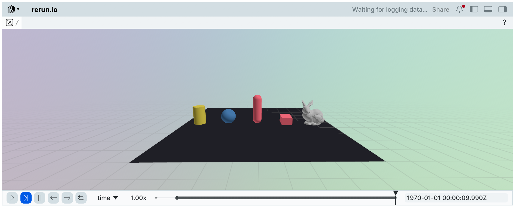

Viewers and Debugging#
Newton provides multiple viewer backends for live visualization, debugging, historical inspection, persistent recording, and external integrations.
Choosing a Viewer#
Choose a viewer based on whether you need a live display, history within the current viewer session, or a persistent artifact:
Viewer |
Best for |
Inspection or output |
Dependencies |
|---|---|---|---|
Interactive development and live debugging |
Real-time display; frame capture |
pyglet, imgui_bundle |
|
Path-traced visualization on NVIDIA GPUs |
Real-time display; frame capture |
ovrtx, ovstage, usd-core, pyglet ( |
|
Persistent state-snapshot recording and visual playback |
|
None for JSON; cbor2 for binary |
|
Persistent scene export for 3D pipelines |
Time-sampled |
usd-core |
|
Live visualization and optional session timeline inspection |
Web interface |
rerun-sdk |
|
Browser or notebook visualization and visual recording |
Web interface; |
viser |
|
Headless or automated execution without visualization |
None |
None |
Debugging with Viewers#
Newton’s viewers use cooperative, explicit logging rather than automatically
inspecting every part of a simulation. Call
set_model() to provide the scene structure and
log_state() each frame to provide its motion.
Contacts appear only when the application calls
log_contacts(). Forces, targets, normals,
metrics, and other diagnostics similarly require explicit log_*() calls.
The way these diagnostics are presented and whether their history is retained
depends on the viewer backend.
Use a live viewer such as ViewerGL to inspect the
current scene and add custom overlays for
contacts or other diagnostic data. For historical inspection, enable
keep_historical_data in ViewerRerun to retain a
timeline for the current viewer session, or use
ViewerFile to create a persistent state-snapshot
recording for later visual playback. ViewerViser and
ViewerUSD instead create persistent visual or scene
artifacts for sharing and external tools.
Current viewers do not automatically capture solver internals or all the inputs needed to reproduce a simulation. Recording and diagnostic capture will be expanded in the future.
Common Interface#
All viewer backends inherit from ViewerBase and share a common interface:
Core loop methods — every viewer uses the same simulation loop pattern:
set_model()— assign aModel(useset_visible_worlds()afterwards to limit the number of rendered worlds)begin_frame()— start a new frame with the current simulation timelog_state()— update the viewer with the currentState(body transforms, particle positions, etc.)end_frame()— finish the frame and present itis_running()— check whether the viewer is still open (useful as a loop condition)is_paused()— check whether the simulation is paused (toggled withSPACEinViewerGL)should_step()— call exactly once per frame; returnsTruewhen running, orTrueonce after a single-step request (triggered with.or the “Step” button inViewerGL) andFalseotherwise; prefer this over composingis_paused()manuallyset_rendering_paused()/is_rendering_paused()— freeze or resume the displayed image independently of simulation stepping in GL and RTXclose()— close the viewer and release resources
Rendering pause (GL and RTX):
Click Pause Rendering, or call viewer.set_rendering_paused(True), to
freeze the last displayed image while simulation may continue. UI controls,
plots, window resize, and close events remain active. Camera navigation and
scene picking/gizmos are disabled while the image is frozen. The ordinary
Pause and Step controls still govern simulation independently.
Continue calling begin_frame(), logging updates, and end_frame() during
rendering pause. The viewer retains the latest scene updates, including
transforms, visibility, debug geometry, and programmatic camera changes.
Resuming renders the current state without replaying intervening frames.
Frame-scoped UI annotations and fullscreen-image requests keep their normal
per-frame lifetime. A fullscreen image already displayed stays frozen too.
viewer.set_rendering_paused(True)
while viewer.is_running():
if viewer.should_step():
simulation.step()
viewer.begin_frame(simulation.time)
viewer.log_state(simulation.state)
viewer.end_frame() # Keep servicing the window and Resume control.
Rendering pause also works programmatically in headless mode. num_frames
continues to count viewer-loop frames during pause; windowed viewers continue
to ignore that budget. GL frame capture and RTX screenshots return the frozen
image while paused. With no previously displayed image, the background is
empty and capture raises RuntimeError; headless RTX uses the last image
accepted by the viewer. Clearing or replacing the model invalidates the image
but preserves the rendering-pause setting. Other backends report False
and ignore requests to enable rendering pause.
RTX retains its existing rendering modes: the default async_rendering=True
submits one frame asynchronously and waits for it on the next unpaused
end_frame(); False renders synchronously. Rendering pause neither
waits for nor submits a renderer frame. Any outstanding async result is held
and discarded on resume, so it cannot replace the frozen image. Resume
publishes the latest retained scene updates and follows the selected mode’s
usual presentation cadence; async mode displays that new result on the
following frame. Scene updates remain bounded to the latest values per object.
Initial renderer/model loading, explicit cleanup, and an unpaused render can
still wait for GPU work. Rendering pause does not interrupt those operations.
Windowed RTX and GL retain a separate RGBA image texture so changes to the scene, camera, or fullscreen images cannot overwrite the frozen image. This requires four extra bytes per pixel (about 33 MB at 3840 x 2160), plus a GPU image copy on every unpaused frame, even if rendering pause is never used. The copy preserves the displayed image if a logged fullscreen texture is updated or the render target is resized before pause is requested. Headless RTX likewise keeps a GPU copy of the last accepted image, independent of any outstanding async render.
Camera and layout:
set_camera()— set camera position, pitch, and yawcamera_speed— set keyboard camera translation speed in m/sset_world_offsets()— arrange multiple worlds in a grid with a given spacing along each axis
Custom visualization — draw debug overlays on top of the simulation:
log_lines()— draw line segments (e.g. rays, normals, force vectors)log_points()— draw a point cloud (e.g. contact locations, particle positions)log_contacts()— visualizeContactsas normal lines at contact pointslog_gizmo()— display a transform gizmo (position + orientation axes)log_scalar()/log_array()— display numeric diagnostics as scalar plots or array visualizations; see Live Plotslog_image()— display a single or batched image in aViewerGLorViewerRTXdock or fullscreen surface, or in the selected-image panel ofViewerViser(no-op on other backends)
Limiting rendered worlds: When training with many parallel environments, rendering all worlds can impact performance.
All viewers support set_visible_worlds() to limit visualization to a subset of environments:
builder = newton.ModelBuilder()
body = builder.add_body(mass=1.0)
model = builder.finalize()
# Only render the first 4 environments
viewer = newton.viewer.ViewerNull()
viewer.set_model(model)
viewer.set_visible_worlds(range(4))
Live Plots#
log_scalar() and
log_array() provide numeric diagnostics with
backend-specific displays:
ViewerGLandViewerRTXdisplay rolling scalar line plots and heatmaps for scalar, 1-D, and 2-D NumPy or Warp arrays in a Plots window.ViewerViserdisplays rolling scalar line plots in the sidebar. Generic array visualization is not supported.ViewerRerunforwards scalar and array data to Rerun’s native scalar visualization.
For ViewerGL, ViewerRTX, and ViewerViser, set
plot_history_size when constructing the viewer to configure the number
of plotted scalar samples (default: 250). Use smoothing to average a
group of raw samples into each plotted point, and clear=True with
log_scalar to reset a signal’s history and pending smoothing samples.
For example, with ViewerGL or ViewerRTX:
viewer.log_scalar("Training/reward", reward, smoothing=10)
viewer.log_array("Training/observations", observations)
In ViewerGL and ViewerRTX, pass None to log_array to remove
a heatmap. Logging works before the first rendered frame and in headless
mode; plots are displayed when the viewer window and its UI are active.
ViewerRerun controls history through keep_scalar_history for
scalars and keep_historical_data for arrays. It ignores clear and
smoothing, and passing None to log_array is a no-op.
Real-time Viewers#
Headless Mode and Frame Capture#
ViewerGL and ViewerRTX support
headless=True to render off-screen without opening a window. Both implement
get_frame() to capture the last rendered frame
as an RGB Warp array on the viewer device with shape (height, width, 3),
dtype wp.uint8, and a top-left origin. Other viewers inherit the base
implementation, which raises NotImplementedError because they do not
support frame capture. Call it after end_frame() in either headless or
windowed mode:
viewer = newton.viewer.ViewerGL(headless=True) # Or ViewerRTX(headless=True)
viewer.set_model(model)
viewer.begin_frame(sim_time)
viewer.log_state(state)
viewer.end_frame()
frame = viewer.get_frame()
rgb = frame.numpy() # NumPy uint8 array with shape (height, width, 3)
# Reuse the output buffer after rendering subsequent frames.
viewer.get_frame(target_image=frame)
Use an image library to save the captured pixels, for example:
from PIL import Image
Image.fromarray(rgb).save("screenshot.png")
UI overlays are excluded by default. ViewerGL supports
get_frame(render_ui=True) to include them; ViewerRTX does not support
that option. RTX also does not support capturing fullscreen images displayed
with log_image(..., fullscreen=True): get_frame() raises
NotImplementedError for those frames. Capture resumes after the next scene
render. RTX capture uses the fixed render resolution and reads through CPU
memory. With asynchronous rendering, get_frame() waits for the render
submitted by the latest end_frame() so each captured image contains the
latest logged state. Capturing a frame therefore blocks until that render
completes.
Note
For ViewerGL on a machine without a display, pyglet must also be put in headless mode.
pyglet binds its display backend the first time that backend is imported, and Newton imports pyglet’s window
and display modules when the first ViewerGL is constructed, so the
option has to be set before that point. Otherwise the snippet above fails with
pyglet.display.xlib.NoSuchDisplayException: Cannot connect to "None" on Linux, since
pyglet defaults to Xlib. Either set the environment variable:
PYGLET_HEADLESS=1 python your_script.py
or set the option in Python before creating the viewer:
import newton
import pyglet
pyglet.options["headless"] = True
viewer = newton.viewer.ViewerGL(headless=True)
On a machine with several GPUs, PYGLET_HEADLESS_DEVICE (or
pyglet.options["headless_device"]) selects which one renders; it defaults to 0,
which is not necessarily the device the rest of the simulation runs on.
OpenGL Viewer#
Newton provides ViewerGL, a simple OpenGL viewer for interactive real-time visualization of simulations.
The viewer requires pyglet (version >= 2.1.6) and imgui_bundle (version >= 1.92.0) to be installed.
viewer = newton.viewer.ViewerGL()
viewer.set_model(model)
# at every frame:
viewer.begin_frame(sim_time)
viewer.log_state(state)
viewer.end_frame()
# advance the simulation each frame, or step once when paused:
if viewer.should_step():
pass # call solver.step(), example.step(), etc.
Interactive forces and input:
apply_forces() applies viewer-driven forces (object picking with right-click, wind) to the simulation state.
Call it each frame before stepping the solver:
viewer.apply_forces(state)
solver.step(model, state, ...)
is_key_down() queries whether a key is currently pressed.
Keys can be specified as single-character strings ('w'), special key names ('space', 'escape'), or pyglet key constants:
if viewer.is_key_down('r'):
state = model.state() # reset
Custom UI panels:
register_ui_callback() adds custom imgui UI elements to the viewer.
The position parameter controls placement: "side" (default), "stats", "free", or "panel":
def my_ui(ui):
import imgui_bundle.imgui as imgui
imgui.text("Hello from custom UI!")
viewer.register_ui_callback(my_ui, position="side")
Viewer controls:
Key(s) |
Description |
|---|---|
|
Move the camera in the ground plane |
|
Move the camera down or up |
Left drag |
Look around |
Middle drag |
Orbit around the current camera pivot |
|
Pan the camera and pivot |
|
Dolly toward or away from the pivot |
Mouse wheel |
Dolly toward or away from the pivot |
|
Adjust field of view |
|
Frame the visible model and set the orbit pivot |
|
Toggle the sidebar |
|
Pause or continue the simulation |
|
Step the simulation by one frame while paused |
|
Close the viewer |
Right click |
Pick objects |
Orbit mode keeps the pivot fixed while the camera rotates around it. Use F to center the pivot on the model, Shift + middle drag to pan the pivot with the camera, and the mouse wheel to change the orbit distance.
Troubleshooting:
If you encounter an OpenGL context error on Linux with Wayland:
OpenGL.error.Error: Attempt to retrieve context when no valid context
Set the PyOpenGL platform before running:
export PYOPENGL_PLATFORM=glx
This is a known issue when running OpenGL applications on Wayland display servers.
RTX Viewer#
ViewerRTX provides real-time path-traced rendering using the NVIDIA OVRTX renderer.
It builds a USD scene on the first frame and updates rigid-body transforms each frame via the renderer’s runtime
scene interface, presenting the result in a pyglet/OpenGL window. ViewerRTX selects the legacy OVRTX attribute
interface for OVRTX versions before 0.4 and the OVStage interface for OVRTX 0.4 and newer.
Debug geometry can be added before or after the first rendered frame using
log_shapes(), log_points(),
log_lines(), and log_arrows().
For custom markers, register a triangle mesh with log_mesh()
and place it with log_instances(). Instance batches support
changing counts, transforms, scales, colors, and visibility. RTX arrows have cylinder shafts
and cone heads; their width specifies the shaft radius in meters.
Note
The RTX viewer is experimental and may not have the same functionality as the OpenGL viewer.
Note
The first image can take a while to appear while OVRTX loads and compiles RTX shaders. A blank window during this startup work does not necessarily indicate a rendering failure; wait for shader compilation to finish before diagnosing the viewer.
Installation: Requires the rtx dependency group:
uv sync --extra rtx
This installs ovrtx (the NVIDIA OVRTX renderer), ovstage for runtime scene management, and
usd-core, in addition to pyglet for the window.
ViewerRTX has been validated with the following renderer configurations:
ovrtx==0.3.0.312915withovstage==0.1.1.355824(minimum-dependency CI)ovrtx==0.5.1.385782withovstage==0.2.1.385922(GPU CI)
OVRTX 0.4 and newer select the same OVStage interface, but only the exact configurations above are part of
Newton’s validated matrix. Upgrade ovrtx and ovstage together; OVRTX 0.5.1 fails to start with
OVStage 0.2.0.
Warning
With ovstage==0.2.0.377349, CUDA-backed runtime transform updates can leave ViewerRTX showing a uniform
gray image, commonly after switching examples in the same process. OVStage 0.2.1 no longer shows this. See
issue #4283.
viewer = newton.viewer.ViewerRTX(environment="studio")
viewer.set_model(model)
# at every frame:
viewer.begin_frame(sim_time)
viewer.log_state(state)
viewer.end_frame()
The live plots use imgui_bundle, included in
the examples dependencies. Install both RTX viewer and UI dependencies
with uv sync --extra rtx --extra examples.
Lighting and render settings: For custom lighting, pass environment="none" and add a USD layer with your
lights, e.g. an HDR DomeLight, via add_background_usd() before the first frame.
render_settings authors omni:rtx:* attributes on the viewer’s render product:
viewer = newton.viewer.ViewerRTX(
environment="none", render_settings={"omni:rtx:pt:samplesPerPixel": ("uint", 4)}
)
viewer.add_background_usd("lighting.usda")
Rendering an existing USD scene#
With OVStage 0.2 or newer, ViewerRTX(ovstage=stage) renders a populated ovstage.Stage with its authored
materials and lights instead of building a scene from the model. The stage presents the scene; Newton only moves it:
Bodies:
set_model()binds each Newton body to the stage prim whose path equals the body’sbody_label, andlog_state()writes the body’s simulated world pose to that prim, keeping the prim’s authored scale.add_usd()labels each body with the path of its rigid-body prim, so importing the scene the stage holds yields matching labels. Bodies without a matching prim are not rendered and trigger a warning; bodies sharing a label are rejected. Bodies merged bycollapse_fixed_jointsleave their prims without a body; such prims move only if they are descendants of the prim they were merged into.Frames: If the import re-oriented the stage, through up-axis alignment or
xform,set_model()infers the model-to-stage transform from the root bodies, whose poses must still match the stage’s. Bodies then stay at their authored poses, and the camera and debug geometry follow the model’s frame. Without bound root bodies, the viewer assumes both frames coincide.Other geometry: The viewer generates no geometry for the model’s shapes, cloth, or particles, and does not update the stage’s deformable prims.
show_triangles, which is off by default here, andshow_particlesdraw the simulated cloth and particles as debug overlays.Stage ownership: The viewer keeps its camera, render product, and debug geometry under
/__newton_viewerand never clears the stage.set_model()and eachend_frame()write above the stage’s current write floor and then advance it, so finish your own writes to the stage before calling them. Bound prims keep their last world pose after the viewer releases the stage. The stage needs GPU hierarchy computation.
To replicate an asset across environments, clone it in the stage and replicate the same prototype with
replicate(). Each world must sit where the stage places its clone, and its body labels must
name the clone’s prims. The example below imports env_0 as the prototype, makes its labels relative to env_0,
and lets label_prefixes root each world’s labels at its own environment:
import ovrtx
ovrtx.register_schema_paths()
import ovstage
import warp as wp
from pxr import Gf, Usd, UsdGeom, UsdLux
import newton
import newton.examples
import newton.viewer
env_count, spacing = 4, 2.5
envs = [f"/World/envs/env_{i}" for i in range(env_count)]
# Author lights, a ground, one placed Xform per environment, and the robot in env_0.
scene = Usd.Stage.CreateNew("scene.usda")
UsdGeom.SetStageUpAxis(scene, UsdGeom.Tokens.z)
UsdLux.DomeLight.Define(scene, "/World/Light").CreateIntensityAttr(1000.0)
ground = UsdGeom.Plane.Define(scene, "/World/Ground")
ground.CreateWidthAttr(50.0)
ground.CreateLengthAttr(50.0)
for i, env in enumerate(envs):
UsdGeom.Xform.Define(scene, env).AddTranslateOp().Set(Gf.Vec3d(spacing * i, 0.0, 0.0))
scene.DefinePrim(f"{envs[0]}/Robot").GetReferences().AddReference(newton.examples.get_asset("ant.usda"))
scene.Save()
# Populate the stage and clone the robot into the other environments.
stage = ovstage.Stage(
"scene",
config=ovstage.StageConfig(
runtime_default_hierarchy_computation_model=ovstage.HierarchyComputationModel.GPU_INCREMENTAL
),
)
ovstage.population.open_usd(stage, "scene.usda", ordinal=1)
stage.clone(f"{envs[0]}/Robot", [f"{env}/Robot" for env in envs[1:]], ordinal=2)
stage.advance_write_floor(2).wait()
# Replicate env_0 at the stage's placements, labeled with each environment's prim paths.
prototype = newton.ModelBuilder()
prototype.add_usd("scene.usda", root_path=envs[0])
for labels in (prototype.body_label, prototype.joint_label, prototype.shape_label, prototype.articulation_label):
labels[:] = [label.removeprefix(f"{envs[0]}/") for label in labels]
builder = newton.ModelBuilder()
builder.replicate(
prototype,
env_count,
xforms=[wp.transform((spacing * i, 0.0, 0.0), wp.quat_identity()) for i in range(env_count)],
label_prefixes=envs,
)
builder.add_ground_plane()
model = builder.finalize()
viewer = newton.viewer.ViewerRTX(ovstage=stage)
viewer.set_model(model)
# at every frame:
viewer.begin_frame(sim_time)
viewer.log_state(state)
viewer.end_frame()
Recording and Offline Viewers#
Recording to File (ViewerFile)#
The ViewerFile backend records model and state
snapshots to JSON or binary files for later visual playback or programmatic
inspection. This is useful for capturing simulation motion for debugging or
sharing.
A ViewerFile recording contains:
the
Modelpassed toset_model();every Warp array stored directly on each
Statepassed tolog_state().
It does not currently contain contacts, custom primitives, scalar or array
diagnostics, solver internals, or the simulation timestamps passed to
begin_frame(). Loading a recording restores the
captured model and state snapshots; it does not re-execute the simulation.
Solver configuration, controls, contacts, and other simulation inputs must be
captured separately if they are needed to reproduce a run.
File formats:
.json: Human-readable JSON format (no additional dependencies).bin: Binary CBOR2 format (more efficient, requirescbor2package)
To use binary format, install the optional dependency:
pip install cbor2
Recording static state snapshots:
import tempfile, os
builder = newton.ModelBuilder()
body = builder.add_body(mass=1.0)
model = builder.finalize()
state = model.state()
# Record to JSON format (human-readable, no extra dependencies)
output_path = os.path.join(tempfile.mkdtemp(), "simulation.json")
viewer = newton.viewer.ViewerFile(output_path)
viewer.set_model(model)
sim_time = 0.0
# Record five snapshots of the current static state
for _ in range(5):
viewer.begin_frame(sim_time)
viewer.log_state(state)
viewer.end_frame()
sim_time += 1.0 / 60.0
# Close to save the recording
viewer.close()
...
This minimal snippet records a static state to demonstrate the ViewerFile
API. Use the built-in recording example below to capture simulation motion.
Loading and playing back recordings:
Use ViewerFile to load a recording, then restore the model and state for a given frame. Use ViewerGL (or another rendering viewer) to visualize.
# Load a recording for playback
viewer_file = newton.viewer.ViewerFile(output_path)
viewer_file.load_recording()
# Restore the model and state from the recording
model = newton.Model()
viewer_file.load_model(model)
print(f"Frames: {viewer_file.get_frame_count()}")
state = model.state()
viewer_file.load_state(state, frame_id=0) # frame index in [0, get_frame_count())
Frames: 5
To try the complete workflow with the built-in examples:
uv run --extra examples -m newton.examples recording
uv run --extra examples -m newton.examples replay_viewer
example_recording.py simulates humanoids across multiple worlds and writes
the model and state snapshots to humanoid_recording.bin. In the replay
viewer, select that file to scrub through the captured state snapshots.
ViewerFile captures all direct Warp-array attributes of the logged
State, regardless of which worlds are selected with
set_visible_worlds(). Large states and long
runs can therefore use substantial memory and disk space. Set
max_history_size when constructing ViewerFile to retain only the latest
bounded number of snapshots. Per-world capture is not currently supported.
Rendering to USD#
Instead of rendering in real-time, you can also render the simulation as a time-sampled USD stage to be visualized in Omniverse or other USD-compatible tools using the ViewerUSD backend.
viewer = newton.viewer.ViewerUSD(output_path="simulation.usd", fps=60, up_axis="Z")
viewer.set_model(model)
# at every frame:
viewer.begin_frame(sim_time)
viewer.log_state(state)
viewer.end_frame()
# Save and close the USD file
viewer.close()
External Integrations#
Rerun Viewer#
The ViewerRerun backend integrates with the rerun visualization library,
enabling real-time or offline visualization with advanced features like time scrubbing and data inspection.
Installation: Requires the rerun-sdk package:
pip install rerun-sdk
Usage:
# Default usage: spawns a local viewer
viewer = newton.viewer.ViewerRerun(
app_id="newton-simulation"
)
# Or specify a custom server address for remote viewing
viewer = newton.viewer.ViewerRerun(
address="rerun+http://127.0.0.1:9876/proxy",
app_id="newton-simulation"
)
viewer.set_model(model)
# at every frame:
viewer.begin_frame(sim_time)
viewer.log_state(state)
viewer.end_frame()
By default, the viewer will run without keeping historical state data in the viewer to keep the memory usage constant when sending transform updates via log_state().
This is useful for visualizing long and complex simulations that would quickly fill up the web viewer’s memory if the historical data was kept.
If you want to keep the historical state data in the viewer, you can set the keep_historical_data flag to True.
The rerun viewer provides a web-based interface with features like:
Time scrubbing and playback controls
3D scene navigation
Data inspection and filtering
Recording and export capabilities
Jupyter notebook support
The ViewerRerun backend automatically detects if it is running inside a Jupyter notebook environment and automatically generates an output widget for the viewer
during the construction of ViewerRerun.
The rerun SDK provides a Jupyter notebook extension that allows you to visualize rerun data in a Jupyter notebook.
You can use uv to start Jupyter lab with the required dependencies (or install the extension manually with pip install rerun-sdk[notebook]):
uv run --extra notebook jupyter lab
Then, you can use the rerun SDK in a Jupyter notebook by importing the rerun module and creating a viewer instance.
viewer = newton.viewer.ViewerRerun(keep_historical_data=True)
viewer.set_model(model)
frame_dt = 1 / 60.0
sim_time = 0.0
for frame in range(500):
# simulate, step the solver, etc.
solver.step(...)
# visualize
viewer.begin_frame(sim_time)
viewer.log_state(state)
viewer.end_frame()
sim_time += frame_dt
viewer.show_notebook() # or simply `viewer` to display the viewer in the notebook


The history of states will be available in the viewer to scrub through the simulation timeline.
Viser Viewer#
The ViewerViser backend integrates with the viser visualization library,
providing web-based 3D visualization that works in any browser and has native Jupyter notebook support.
Installation: Requires the viser package:
pip install 'viser>=1.1.1'
Usage:
# Default usage: starts a web server on port 8080
viewer = newton.viewer.ViewerViser(port=8080)
# Open http://localhost:8080 in your browser to view the simulation
viewer.set_model(model)
# at every frame:
viewer.begin_frame(sim_time)
viewer.log_state(state)
viewer.end_frame()
# Close the viewer when done
viewer.close()
--paused also applies when launching examples with --viewer viser.
The native Simulation panel provides Pause, Step, and Reset; the Examples
panel can switch scenarios without reconnecting the browser. Example controls
run on the simulation thread. A Layers panel toggles visibility of named
simulation layers, including the multi-solver overlay example.
Press-and-hold buttons use browser heartbeats
and release within 150 ms of the last heartbeat, or immediately on disconnect.
For application-specific panels, lighting, or scene tools, use the read-only
server property to access the native Viser API:
with viewer.server.gui.add_folder("Diagnostics"):
viewer.server.gui.add_markdown("Application-specific status")
viewer.server.scene.configure_environment_map(hdri="studio", background=False)
The viewer owns this server and stops it when closed. Native Viser callbacks
run asynchronously; enqueue changes to simulation state and consume them on
the simulation thread before stepping. The common ImGui-style callback adapter
supports buttons, checkboxes, radio buttons, float/int sliders, float inputs,
text, separators, disabled scopes, and button hold state. The same_line
layout helper is a no-op. See
register_ui_callback() for the complete subset.
The adapter reports is_available = False because no full ImGui context is
present; registered callbacks still run. Unsupported calls raise an
AttributeError directing you to viewer.server.gui. Use that native API
for richer interfaces.
Bind each layer’s model with activate() and set_model() before capturing
its CUDA graph, and call apply_forces(state) for that active layer during
capture. Picking uses device state, so picks made later in the browser take
effect on graph replay. clear_all_layers() restores the default Viser camera
when switching examples; clearing one layer preserves the current view.
Textured meshes preserve texture alpha and display opacity using glTF blend
materials. A textured instance batch can share one opacity value; Viser does
not expose varying per-instance opacity for textured batches. Such requests
warn and retain the mesh material’s opacity. Applications using
log_instances() can use separate batches for
different opacities. Untextured batches support per-instance opacity directly.
Recording and playback
ViewerViser can record simulations to .viser files for later playback:
# Record to a .viser file
viewer = newton.viewer.ViewerViser(record_to_viser="my_simulation.viser")
viewer.set_model(model)
# Run simulation...
for frame in range(500):
viewer.begin_frame(sim_time)
viewer.log_state(state)
viewer.end_frame()
sim_time += frame_dt
# Save the recording
viewer.save_recording()
The recorded .viser file can be played back using the viser HTML player.
Jupyter notebook support
ViewerViser has native Jupyter notebook integration. When recording is enabled, calling show_notebook()
will display an embedded player with timeline controls:
viewer = newton.viewer.ViewerViser(record_to_viser="simulation.viser")
viewer.set_model(model)
# Run simulation...
for frame in range(500):
viewer.begin_frame(sim_time)
viewer.log_state(state)
viewer.end_frame()
sim_time += frame_dt
# Display in notebook with timeline controls
viewer.show_notebook() # or simply `viewer` at the end of a cell
When no recording is active, show_notebook() displays the live server in an IFrame.
The viser viewer provides features like:
Real-time 3D visualization in any web browser
Interactive camera controls (pan, zoom, orbit)
Native simulation and visualization controls
Interactive transform gizmos and object picking
A selected-image panel and live scalar plots
GPU-accelerated batched mesh rendering
Recording and playback capabilities
Public URL sharing via viser’s share feature
Utility Viewers#
Null Viewer#
The ViewerNull provides a no-operation viewer for headless environments or automated testing where visualization is not required.
It simply counts frames and provides stub implementations for all viewer methods.
builder = newton.ModelBuilder()
body = builder.add_body(mass=1.0)
model = builder.finalize()
state = model.state()
sim_time = 0.0
viewer = newton.viewer.ViewerNull(num_frames=10)
viewer.set_model(model)
while viewer.is_running():
viewer.begin_frame(sim_time)
viewer.log_state(state)
viewer.end_frame()
sim_time += 1.0 / 60.0
print(f"Ran {viewer.frame_count} frames")
Ran 10 frames
This is particularly useful for:
Performance benchmarking without rendering overhead
Automated testing in CI/CD pipelines
Running simulations on headless servers
Batch processing of simulations
Custom Visualization#
In addition to rendering simulation state with log_state(), you can draw custom debug overlays using the log_* methods available on all viewers.
Drawing lines:
Use log_lines() to draw line segments — useful for visualizing forces, rays, or normals:
# Draw force vectors at body positions
viewer.log_lines(
"/debug/forces",
starts=positions, # wp.array[wp.vec3]
ends=positions + forces, # wp.array[wp.vec3]
colors=(1.0, 0.0, 0.0), # red
width=0.005,
)
Drawing points:
Use log_points() to draw a point cloud:
viewer.log_points(
"/debug/targets",
points=target_positions, # wp.array[wp.vec3]
radii=0.02, # uniform radius, or wp.array[wp.float32]
colors=(0.0, 1.0, 0.0), # green
)
Visualizing contacts:
Use log_contacts() to draw contact normals from a Contacts object.
The viewer’s show_contacts flag (toggled in the ViewerGL sidebar) controls visibility:
viewer.log_contacts(contacts, state)
Contact normals, mode disks, and force arrows are sized relative to the smaller
shape in each contact pair. Use the Contact Relative Scale control to adjust
all contact glyphs while preserving their proportions across differently sized
contacts. Contact mode coloring and force arrows require the "force"
extended contact attribute.
Transform gizmos:
Use log_gizmo() to display a coordinate-frame gizmo at a given transform:
viewer.log_gizmo("/debug/target_frame", wp.transform(pos, rot))
Logging images:
Use log_image() to display images (including per-view
outputs from SensorCamera). By default, non-headless
ViewerGL and ViewerRTX show logged images
as dockable windows. Pass fullscreen=True to draw the image as the main viewer
surface for the current frame instead of the 3D scene. ViewerViser
displays the selected stream in a persistent native Images panel and accepts,
but ignores, the fullscreen option. Accepted shapes are (H, W), (H, W, C),
(N, H, W), and (N, H, W, C) with C in (1, 3, 4). Accepted dtypes are
uint8 (values in [0, 255]) and float32 (values in [0, 1]; values outside
the range are clipped).
from newton.sensors import SensorCamera
builder = newton.ModelBuilder()
builder.add_body(mass=1.0)
model = builder.finalize()
viewer = newton.viewer.ViewerNull()
viewer.set_model(model)
# Grayscale heatmap: normalize to [0, 1] before logging so float32
# values land in the accepted range.
depth_image = np.full((16, 16), 2.0, dtype=np.float32)
heatmap = depth_image / max(depth_image.max(), 1e-6)
viewer.log_image("heatmap", heatmap)
# Per-view color images from a camera sensor. Allocate the sensor output
# once and reuse it every frame; the RGBA conversion is a zero-copy view.
camera = SensorCamera(model)
view_count, width, height = 1, 16, 16
color_image = camera.create_color_image_output(view_count, width, height)
# ... in a real pipeline, camera.update(...) fills color_image each frame.
rgba = SensorCamera.Utils.to_rgba_from_color(color_image)
viewer.log_image("camera", rgba)
For a 3D input, a last-axis of 1, 3, or 4 is interpreted as channel count
for a single (H, W, C) image; otherwise the array is interpreted as a
batch (N, H, W) of grayscale images. Pass a 4D array if the
disambiguation matters.
Use fullscreen=True for image-first viewers, camera-debug views, or headless
frame capture where the image should replace the 3D scene:
from newton.sensors import SensorCamera
builder = newton.ModelBuilder()
builder.add_body(mass=1.0)
model = builder.finalize()
viewer = newton.viewer.ViewerNull()
viewer.set_model(model)
# Per-view color images from a camera sensor. Allocate the sensor output
# once and reuse it every frame; the RGBA conversion is a zero-copy view.
camera = SensorCamera(model)
view_count, width, height = 1, 16, 16
color_image = camera.create_color_image_output(view_count, width, height)
# ... in a real pipeline, camera.update(...) fills color_image each frame.
rgba = SensorCamera.Utils.to_rgba_from_color(color_image)
viewer.log_image("camera", rgba, fullscreen=True)
For ViewerGL and ViewerRTX, the
fullscreen=True selection is per-frame: call
log_image() with fullscreen=True after
begin_frame() and before
end_frame() on every frame that should show the
image. If a frame does not log a fullscreen image, the viewer renders the 3D scene
for that frame. ViewerRTX ignores images in headless mode.
ViewerViser retains its Images panel and updates only the
stream selected there. Other viewer backends inherit the no-op base implementation
and ignore both the image and the fullscreen option.
Camera and world layout:
Set the camera programmatically with set_camera().
pitch and yaw are specified in degrees:
viewer.set_camera(pos=wp.vec3(5.0, 2.0, 3.0), pitch=-20.0, yaw=30.0)
viewer.camera_speed = 0.2 # m/s
When visualizing multiple worlds, use set_world_offsets() to arrange them in a grid
(must be called after set_model()):
viewer.set_world_offsets(spacing=(5.0, 5.0, 0.0))